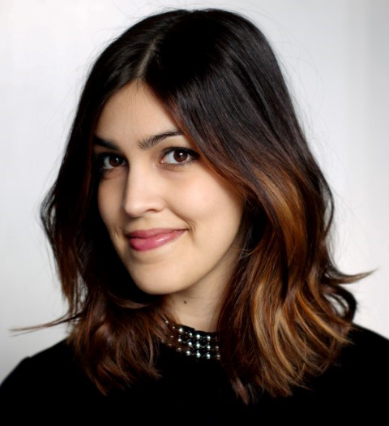

Samira Zahidi

Summary
Webdeveloper and freelance musician
Education
- Intensive "Piscine" course in software development, algorithms, and problem-solving at 42 Berlin
Aug - Sep 2024
- Masters Art Studies
Technical University of Berlin
2016 - 2020
- Bachelor of Arts in Art History & Art-Media-Cultural Education
Erasmus+ Semester at Universidad Complutense de Madrid
2014
-
Goethe University Frankfurt am Main
2011 - 2016
Work Experience
Copywriter - Content Creation
Best Secret GmbH | Feb 2020 - Jan 2021
-
Created product descriptions for the Fashion and Home sectors.
- Onboarded new team members and developed optimization processes.
- Coordinated with external partners in content creation.
Working Student - Online Editing
eBay/Brands4Friends | Jan 2018 - Dec 2019
-
Created and optimized product, brand, and campaign texts
- Maintained and updated manufacturer information
Intern - Editorial/Production & Webdesign
Mediaplanet Verlag Deutschland GmbH | Mar 2016 - May 2016
Mister bK! Kommunikation & strategisches Design | Mar 2014 - Apr 2014
- Optimized and edited online articles and managed topic-specific websites
- Structured and redefined editorial content
- Designed websites and posters and performed basic image editing
- Assisted in the development of design strategies
Skills
-
Languages
- German (Native), English (Fluent), French (Good), Spanish (Basic), Swedish (Basic)
IT
- Web Development: HTML, CSS, basic knowledge of JavaScript and C
- CMS & Design: Typo3, WordPress, Adobe Photoshop
- Tools: Microsoft Office, Unix Shell (Bash)
-
Interests
-
Passion for music, art, and personal development
Certifications
- Webdevelopment - BTA 2021
- Community & Social Media Manager - BTA 2021
- Ayurveda Coach - Ayurveda Campus Schwerin 2022
- Nutritionist - BTB 2020
- Yogateacher Hatha & Vinyasa - Wanda Badwal 2019
Other
Contact Me